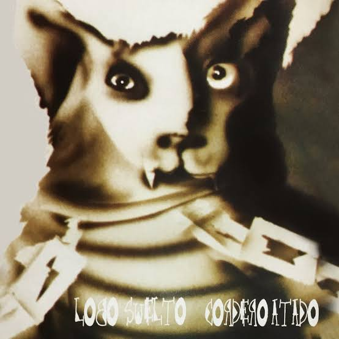
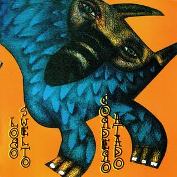
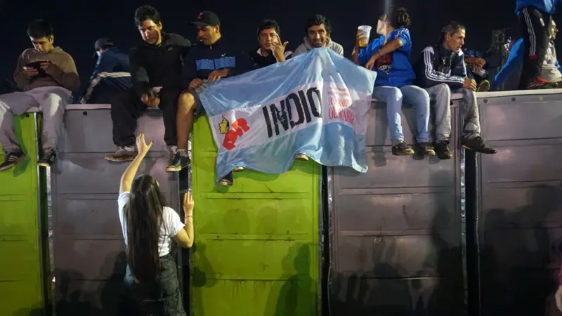

Historia
¡Bienvenidos al blog de Los Redondos! Un espacio plenamente dedicado a repasar la historia, las letras y el mito de Patricio Rey y sus Redonditos de Ricota.
Desde sus comienzos en La Plata a mediados de los 70, la banda liderada por el Indio Solari y Skay Beilinson transformó el rock argentino en un fenómeno cultural y social sin precedentes, movilizando multitudes en las memorables "misas ricoteras".
Ver sus Álbumes
Los Álbumes
La discografía de la banda marcó un antes y un después en la música nacional. Desde "Gulp!" hasta "Momo Sampler".

Lobo suelto, cordero atado
Uno de los discos dobles más icónicos del rock, lanzado en el año 1993.

Escribir en el blog
Fotos de la Misa
El pogo más grande del mundo y la pasión de la gente viajando desde todas partes. ¡Dejame tu foto si estuviste ahí!

Nina y su padre en el recital

familia unida por una unica pasion

El choripnero

Encima de los baños se sentaron para ver al Indio.

Eterno bajo las luces
Fotos de la Misa
El pogo más grande del mundo y la pasión de la gente viajando desde todas partes. ¡Dejame tu foto si estuviste ahí!
¿Estuviste ahí? Sumá tu foto a la misa


Charly_Ricotero • Hace 2 horas
¡Lobo suelto es el mejor disco doble de la historia del rock nacional! Qué gran blog, Mica.